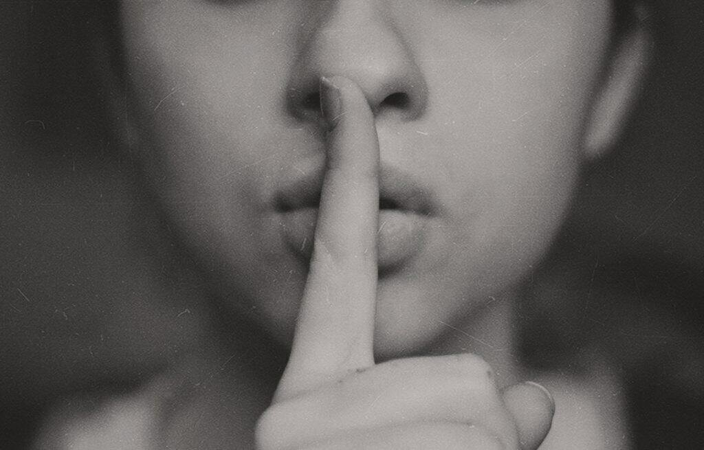

Hoy en día vivimos en un mundo donde existe mucha contaminación auditiva, debido al exceso de estímulos sonoros que existen a nuestro alrededor, ya sea en la calle, centros comerciales, hospitales, escuelas, etc. Esto ha ido incrementando cada vez más, anulando nuestra capacidad de asombro frente al silencio y todo lo que ahí ocurre.
Además del disfrute, está la necesidad que presenta nuestro cerebro de descansar de los ruidos, ya que está acción presenta consecuencias placenteras y además de múltiples beneficios en nuestra conducta y desarrollo neuronal. El silencio regenera células cerebrales en la zona del hipocampo, área responsable del aprendizaje, restaurando procesos cognitivos.
Sin el silencio no hay sonido, es una afirmación que se sostiene desde la ciencia y el arte, permitiendo valorar su poder, visualizado desde diferentes perspectivas. Nos permite tomar consciencia del presente, focalizando nuestra atención al ahora y todo lo que en ese momento ocurre. Si le damos paso, se aclaran las confusiones mentales, se dispone nuestro ser a la acción creativa y una de los aspectos más relevantes a mi parecer, es la hermosa posibilidad de escucharnos, escuchar a otros/as y escuchar al mundo.
“El discurso es plata, pero el silencio es oro” Muhsin Al-Ramli.
En nuestros días percibo que hay temor al silencio, sobre todo en los grupos humanos, donde hay miedo a desnudarse en el silencio y ahondar en una comunicación diferente a la que nos han enseñado y hecho creer que es la única que existe. Ha prevalecido la comunicación oral, anulando muchas otras y en este caso cuando hablamos del silencio, es una oportunidad de dialogar desde la presencia, la atención plena. Este uso acentuado sobre el lenguaje oral, ha conllevado a que nuestro cuerpo deje de tomar relevancia en el proceso comunicativo, entregando todo el valor a las palabras sonoras.
En el silencio, nos damos cuenta que nuestro cuerpo también habla y con él podemos decir muchas cosas, resignificando el lenguaje corporal y sus infinitas posibilidades. Es de nuestra responsabilidad darle el espacio que el cuerpo ha perdido, debemos recobrar su importancia y su presencia en todos los contextos.
¿Porqué es importante para los niños y niñas?
- Favorece desarrollo neuro-linguístico.
- Estimula habilidades verbales.
- Aumenta niveles de concentración.
- Despierta conexiones auditivas y motoras.
- Incrementa memoria.
- Desarrolla la creatividad.
- Facilita la protección del sistema inmune.
- Les permite valorar la acción de la contemplación.
- Los educa en el arte de escuchar.
- Fomenta pensamiento crítico y la capacidad de análisis.
- Promueve la paciencia y el auto-control.
- Y mucho más!
¿Cómo disfrutar del silencio junto a niños y niñas?
- Escuchando sonidos de la naturaleza: como suena la lluvia, el canto de un ave, las olas del mar, el cauce de un río, el viento, etc.
- Practicando ejercicios de respiración, ya que ellos de manera amable nos invitan al silencio para concentrar nuestro foco en el aire que entra y sale de nuestro cuerpo.
Consciencia Respiratoria en la infancia
- Mediante canciones que nos inviten al silencio, cuidando el importancia de instaurar este espacio como un disfrute y no un castigo.
- Evitando estímulos sonoros innecesarios en la escuela, hogar, tales como: televisor y/o radio si no se está prestando atención a ello.
- Buscando instancias durante el día para ir a un lugar que nos invite al silencio, ya sea un parque, la playa, etc.
Peggysue.S.S